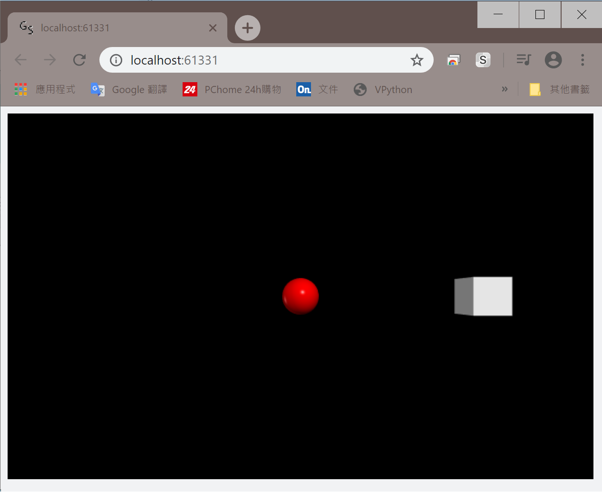

Vpython
做物理模擬時我們通常會盡可能將其圖像化，當我們只模擬二維的現象時，
matplotlib 可以滿足我們幾乎所有需求，即使要做成動畫也難不倒他。
然而，物理現象的模擬，很多都需要以三維空間為基底，才能更完整詮釋。
有一個模組較 VPython ，他有一些已經建立好的基本3D物件，可以滿足三維模擬的需求，包括動畫。
目前與新版本 Python (Python3) 相容的 Vpython 版本為 Vpython 7 ，模組名稱即為 "vpython"。
模組安裝方式請參考連結。
Vpython 使用範例
下面程式碼範例為一正方體等速前進，code:
import vpython as v
v.box()
執行程式後會從瀏覽器跳出一個視窗，展示這支程式的內容。
(Vpython 僅利用瀏覽器為展示平台，執行時並不需要網路連線；此外，在 Spyder 上使用需要額外設定)

Vpython 模組中還有許多功能，請至官網內 "Documentation" 查詢各種功能與用法。
在 Spyder 上使用 Vpython
要在 Spyder 上使用 Vpython 需要做一些設定。
在開啟 Spyder 後，點選上方工具列中的 "Run" ，從選單中選取 "Configuration per file..."
跳出小視窗後點選 "Execute in a dedicated console"
之後執行的程式會在一個新開啟的 console 中執行。